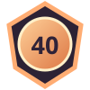

KNIGHTFALL NATIVE / RACING
Inferno Speedway
Dodge traffic, keep your car on the road, and see how long your luck lasts. Use left/right arrows or tap either side of the track.
DISTANCE 0RACING
Local score only

Dodge traffic, keep your car on the road, and see how long your luck lasts. Use left/right arrows or tap either side of the track.